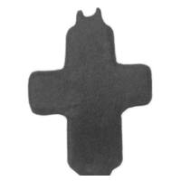

Catalog › CE-0396 · LOV2008-7
Valvă izolată (probabil encolpion), cat. 7, colecție privată Pécs
nedatat · Ungaria · Colecție privată, Pécs (Ungaria)
single valve of a reliquary cross, bronz; nedatat; find spot unknown; kept at Colecție privată, Pécs (Ungaria).


Identificare
- Categorie
- Valvă izolată
- Material
- Bronz
- Dimensiuni
- Î 35 × L 27 mm
Iconografie
- Descriere avers
- Fața păstrată a unei cruci latine, cu brațele cu laturile paralele, brațul longitudinal mai lat; sus fragment de ureche dublă de închidere, jos urmă de rupere. Suprafața e complet tocită; foarte slab se vede că a existat o reprezentare.
- Limba
- Fără inscripție
Datare și atribuire
- Datare
- nedatat
- Centru
- Necunoscut
Descoperire
- Țară
- Ungaria
- Context
- Colecție (fără context)
- Coordonate
- 46.0727° N, 18.2323° E
- Precizia locului
- Loc de păstrare (loc de descoperire incert)
Păstrare și referințe
- Colecție
- Colecție privată, Pécs (Ungaria)
- Bibliografie
- Zs. Lovag, Árpád-kori mellkeresztek, în volumul Kovács László 70 (SZTE), 2008, p. 493–497 [Lovag 2008], p. 495, cat. nr. 7, reprodusă la 7. kép (p. 497).
- Figura
- 7. kép
- Planșe
- Lovag 2008, p. 497
- Observații
- Autoarea o numește „ereklyetartó (?) kereszt egyik oldala” (una din fețele unei cruci-relicvar, cu semn de întrebare); doar urechea dublă de închidere indică două plăci îmbinate în balama, fără urmă de perete lateral sau margine pentru cavitatea relicvei. Dimensiuni: înălțime 3,5 cm (3,7 cm cu fragmentul urechii), lățime 2,7 cm. Locul descoperirii: necunoscut; obiectele colecției provin din comerțul de artă, dar autoarea precizează că au fost găsite în Ungaria. Autoarea notează că piesa nu ține de tema articolului (nota 18). Locul descoperirii nu e cunoscut cu precizie; punctul de pe hartă marchează locul de păstrare (Colecție privată), nu locul descoperirii. Coordonate: nu sunt date în sursă.
Citare: Corpus Encolpiorum, CE-0396, Valvă izolată (probabil encolpion), cat. 7, colecție privată Pécs, --root/piese/LOV2008-7/ (accesat 2026-10-20).